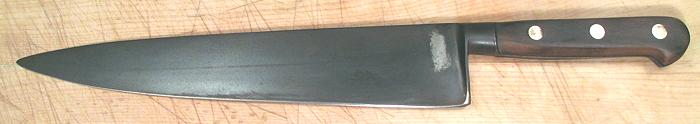

The Chef's knife is the basic prep knife in most kitchens. The most common length is 8 inches, but 7 inches would be fine in my opinion. I don't use a chef's knife because I like my Mioroshi Deba so much.
Chef's knives are available in an absurd range of prices, from about US $8.00 to over $800.00. If I were in the market for one I'd look mostly in the $30 to $60 range where quality should be quite good and the price still reasonable. I might consider something around $100 if I liked it a lot. Chef's knives are also now available in an absurd range of shapes, some quite outlandish.
The knife in the photo is the classic shape for a Chef's Knife. The cutting edge is 9-1/2 inches, which I consider a little too long for household use and would select one 7 to 8 inches long. The total length of this knife 14-1/2 inches. The back edge is 0.15 inches thick at the handle end tapering steadily to 0.03 inches at the tip. This knife has a fully forged blade.
The photo specimen is one of the last carbon steel chef's knives made by Sabatier before going to all stainless. They sold all the left-over blade blanks for scrap, to an outfit that finished them up and sold them as finished knives under their own name - so successfully that Sabatier recently started making a series of classic carbon steel knives again.
More on Knives.
|
|